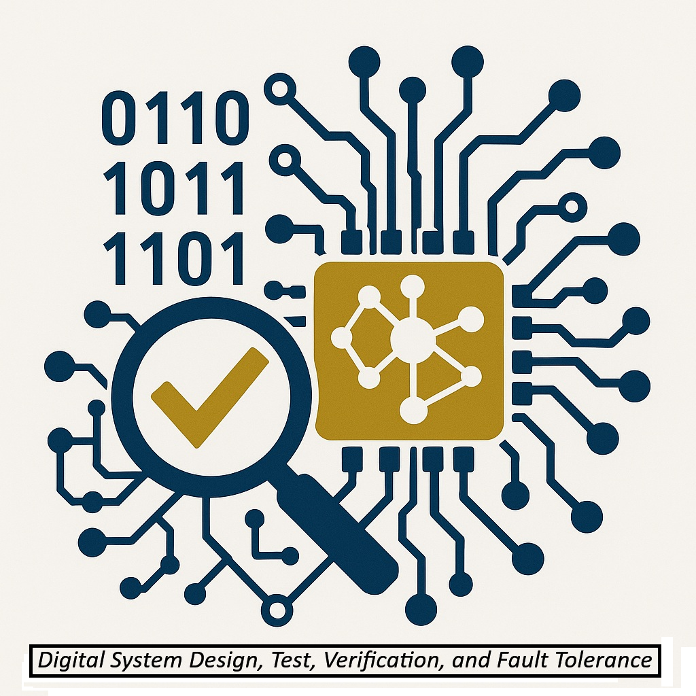

Digital System Design-Test-Verification and Fault Tolerance Research Group
Research Interests
Computer-aided design, verification, and testing for digital systems; Fault-tolerant computing; and VLSI architectures.
Research Activities
Digital Design-Test-Verification and Fault Tolerance Research Group focuses on the comprehensive lifetime validation of digital systems that uses fabrication fault testing and simulation techniques and accounts for design errors, fabrication faults, and operational faults. The specific contributions of his research activities include:
- Efficient techniques for gate-level and high-level simulation-based design verification.
- New post-silicon verification methods that improve the observability of internal signals within complex digital systems.
- Several on-line testing techniques for the detection of operational faults during normal operation.
- Various approximate and exact global fault collapsing techniques that drastically reduce the number of modeled faults.
- New implementation-independent functional test generation techniques that extract good sets of functional vectors.
